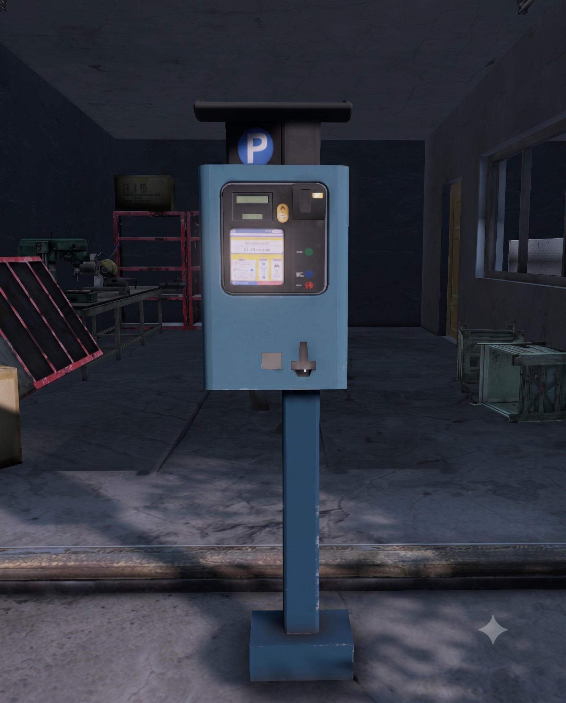

Sparky Services
- Secure vehicle storage
- Fast, automated transactions available 24/7
- Networked vehicle systems by vehicle type
- Vehicle sales at specialized Sparky locations
- USD transactions only
Sparky is Chernarus's networked vehicle system, handling vehicle sales and secure storage across specialized locations. Ground vehicles, boats and helicopters each have their own Sparky network, while additional parking units around the map give survivors a safe place to store their rides. Want one of the little parking bots watching over your own base? Niki, the Vehicle Supplies Trader at Scorched Isle Market, sells personal Sparky units for exactly that.
Loading live Sparky configuration…
Originally built to manage parking lots before the Collapse, this battered little payment kiosk somehow survived decades of neglect, storms and scavengers.
Its second life began when a wandering mechanic discovered that, beneath the rust and battered casing, the electronics were still functioning. The frame was rebuilt, the circuitry revived, and a machine designed to collect parking fees was given a considerably more useful job.
Sparky became the silent caretaker of vehicles across Chernarus.
It does not ask questions. It does not care where your ride came from. It does not judge the dents, bullet holes, questionable paint job or whatever is rattling beneath the hood. As long as you have the cash, Sparky handles the transaction exactly the way it was programmed.
One kiosk became several. Then several became a network. Survivors began trusting the strange little machines with cars, boats and eventually helicopters, each system separated into its own specialized vehicle network.
Eventually, survivors wanted that same peace of mind at home. Niki at Scorched Isle Market started supplying personal Sparky units, giving bases across Chernarus their own stubborn little parking attendant standing watch over the driveway.
It may have been built to collect parking fees, but these days, Sparky keeps the wheels of Chernarus turning.
